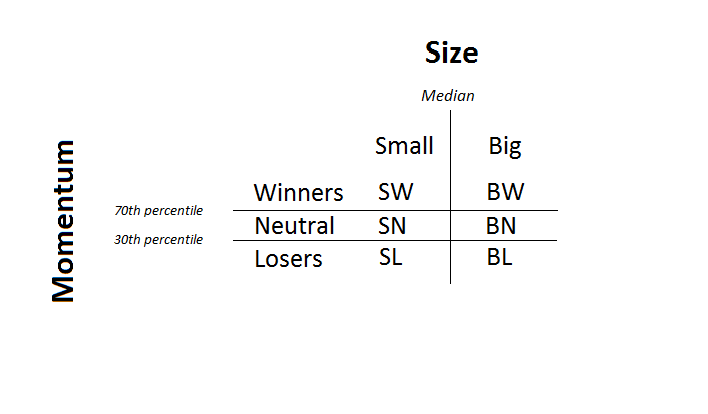

For each of the methodology below, we rebalance the portfolio every month and deploy a buy and hold strategy for currently equally weighted portfolio.
Our present approach is to test our hypothesis, whether Fama/French factor portfolios can be applied to India, on all the constituents of `NIFTY 500 Index<https://www.nseindia.com/products/content/equities/indices/nifty_500.html>`_
Our main source of data is ProwessDx, which provides fundamental data on almost 23000 public companies since 1900. The data source ProwessDx also contains Closing Prices for NSE and BSE stocks. We adjust Closing Prices for stock splits and dividends by the factor provided by ProwessDx at a particular date.
About 89% of the companies in India 1 file their financial statements on 31st March of every year. Assuming a 3 month lag before this information is available to public, we sort our portfolios on 1st July every month and rebalance every month for an equally weighted portfolio. We front fill any fundamental data not available for a particular quarter or year. We noticed that the front filling was not extensive as ProwessDx provided very exhaustive and comprehensive data for both BSE and NSE companies
We have illustrated our findings of the BM ratio and ME ranges from 1995 to 2017 for all 2756 NSE 2 that have been listed ever on NSE, out of which only 1681 survived by March of 2017.
The total number of NSE and BSE companies that have survived as of March 2017 are illustrated below. The data accounts for suspensions and delisting for firms and include companies only.
We apply the standard practice for sorting Winners and Losers as mentioned by Jegadeesh and Titman 3 where the stocks are ranked based on their cumulative returns for the past eleven months i.e \(t-12\) to \(t-1\), excluding the most recent month as it is not an indicator of momentum. The top 30% are considered as the Winners and bottom 30% are considered Losers. For the 1-D portfolios, we simply buy the Winners and short sell the Losers, thus to form Winners minus Losers (WML)
Further, to sort one dimensionally for size, we first looked at the distribution of Market Equity for the NSE sample stocks over the timespan we covered and decided to chose the median ME for the sample stocks as the breakpoint, where Small is \(< \text{Median}\) and Big is \(\geq \text{Median}\), thus to form, Small Minus Big(SMB)
A similar approach was then used to sort one-dimensionally based on value using the Book-to-Market (BM) ratio. The cutoff points are the sample stocks’ 30% 70% and 100% quintiles, deciles, where High BM stocks are \(\geq \text{70th percentile}\) and Low BM stocks are \(< \text{30th percentile}\), thus to form High Minus Low (HML)
For 2-D sorting, we use the intersection of 2 X 3 portfolios for Size and Value, 2 X 3 portfolios for Size and Momentum and 3 X 3 portfolios for Momentum and Value. The intersectional sorts uses 3 parameters
\(\text{B/M}\)
\(\text{ME}\)
\(\text{Cumulative returns or MOM}\)
The figures below illustrate the sorted clusters of a sample of 300 stocks for different periods based on the ME and B/M ratio. The sorting was done using the cutoff points described above.
The methodology for 2-D sorting for Momentum and Size is illustrated below.
In the case above for the cross section of 2 X 3 portfolios for Size and Momentum
Similarly, we find the cross sections for 2 X 3 portfolios for Size & Value and 3 X 3 portfolios for Momentum and Value. The cross sections of these portfolios provides us
\(WML_{(ME)}\)
\(WML_{(B/M)}\)
\(SMB_{(MOM)}\)
\(SMB_{(B/M)}\)
\({HML}_{(ME)}\)
\({HML}_{(MOM)}\)
To finally arrive at the \(SMB, HML, WML\) we take the average of the factors conditioned on two other parameters.
Footnotes
Agarwalla, S. K., Jacob, J. and Varma, J. R. (2013), Four factor model in Indian equities market, Working Paper W.P. No. 2013-09-05, Indian Institute of Management, Ahmedabad.
ProwessDx Data
Jegadeesh, N. and Titman, S. (1993), ‘Returns to buying winners and selling losers: Implications for stock market efficiency’, The Journal of Finance 48(1), 65–91.
{kind=link}